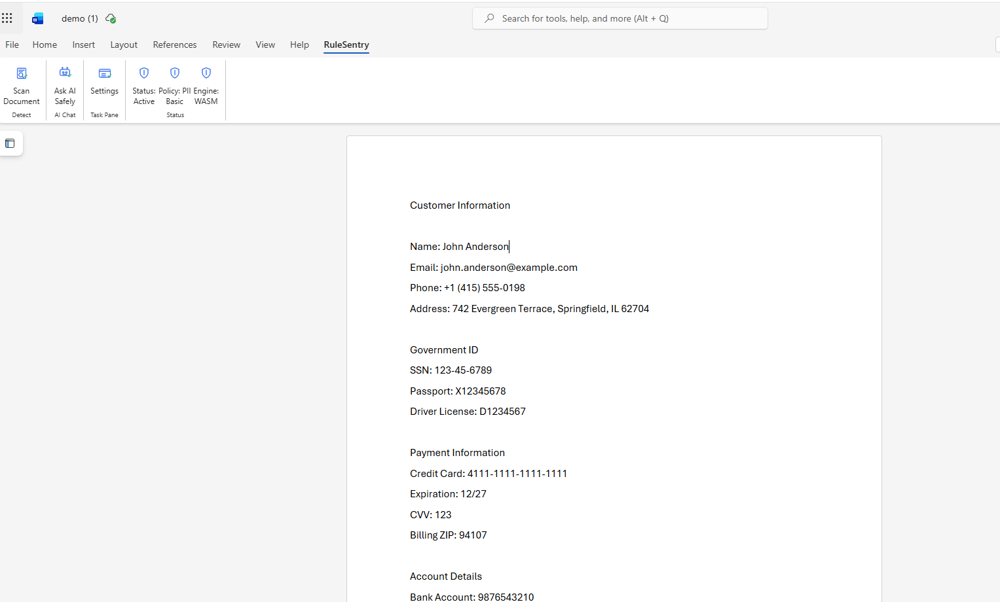
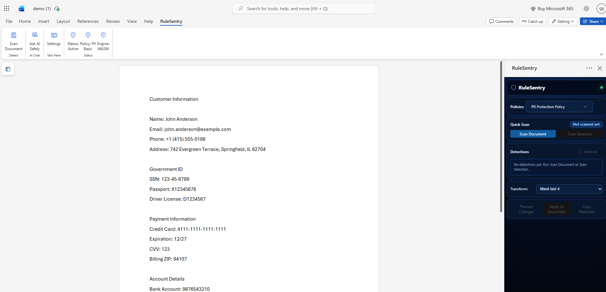
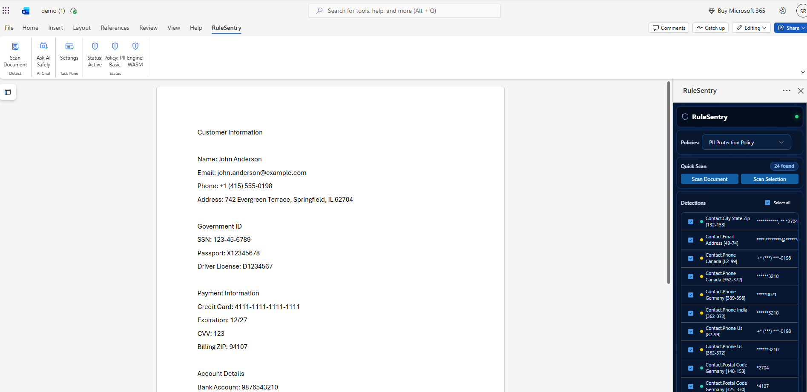
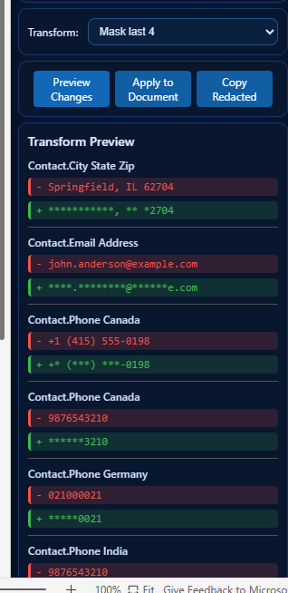
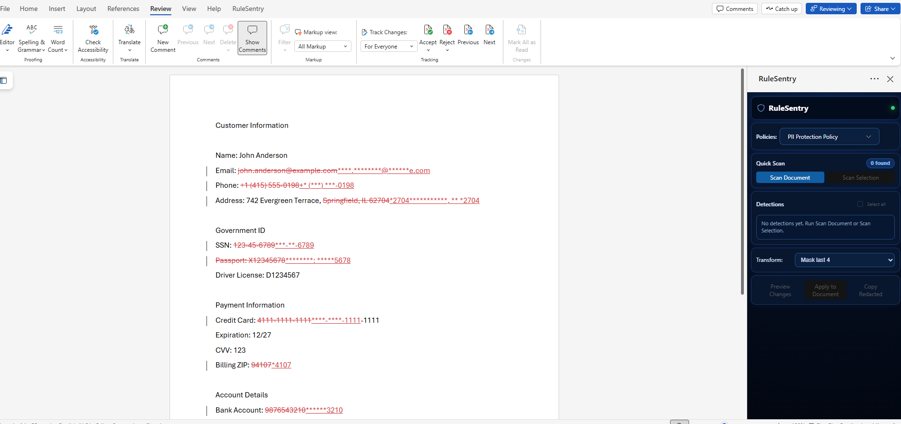

Word Add-in Demo
Secure document scanning and redaction workflow for Microsoft Word.
Downloads
Quick Start
- Download manifest.xml and demo.docx.
- Open Word on the web (office.com) and upload/open demo.docx.
- Go to Insert > Add-ins > My Add-ins, then upload manifest.xml.
- Launch RuleSentry, run a scan, and apply suggested redactions.
Install in Word on the web
- Open Word Online (office.com) and open a document.
- Go to Insert > Add-ins > My Add-ins.
- Select Upload My Add-in.
- Choose manifest.xml.
- Click Add, then launch it from My Add-ins or the Ribbon.
How to Use RuleSentry (Step by Step)
Step 1: Open Your Document
Open your sample document in Word. Confirm the RuleSentry tab appears on the ribbon.

Step 2: Open the Task Pane
Click Scan Document (or another RuleSentry button) to open the RuleSentry task pane on the right side.

Step 3: Run a Scan
Click Scan Document. RuleSentry detects sensitive values and lists findings in Detections.

Step 4: Preview Redactions
Select a transform option (for example Mask last 4), then click Preview Changes to review original vs transformed values.

Step 5: Apply to Document
Click Apply to Document to insert redactions into the document. Review tracked changes and accept or reject as needed.
